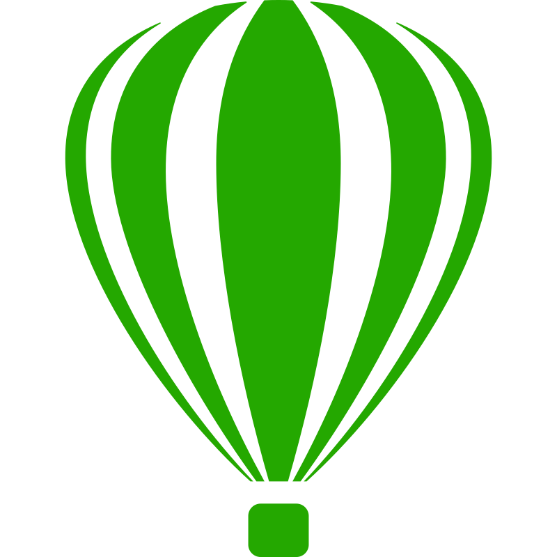
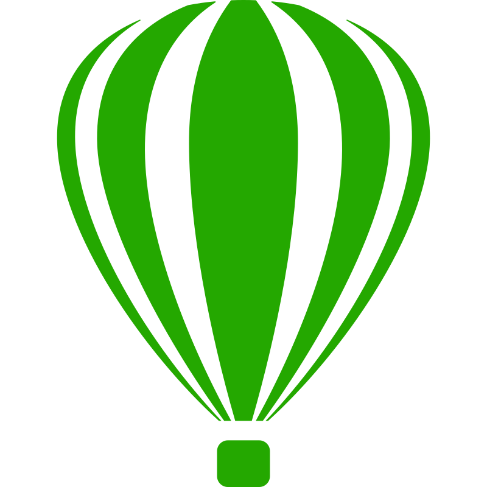

Faqih
Full Stack Developer
@mfaqih_49
"hello i'm Muhammad Nur Imam Faqih Abdullah, loves exploring new technologies, aspires to become a great fullstack developer."
Frontend
Backend
API

🛠 Langguage & Framework & Tools 🛠


 
